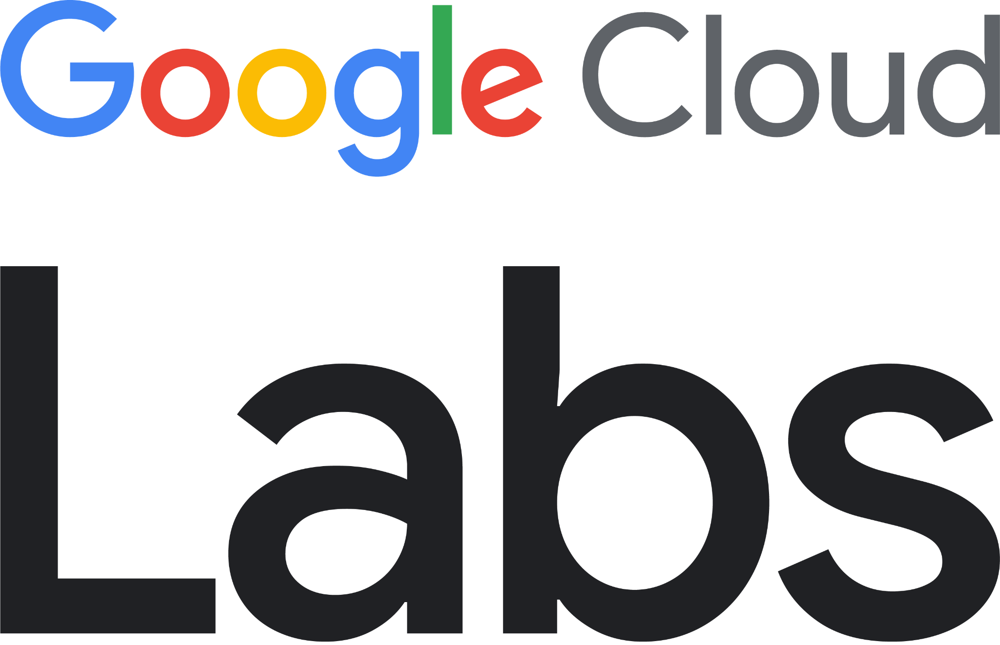
Command and control:
Orchestrate app development
with Gemini and MCP
Hands-On Workshop • Build & Deploy Full-Stack Agentic Apps with Zero Manual Code
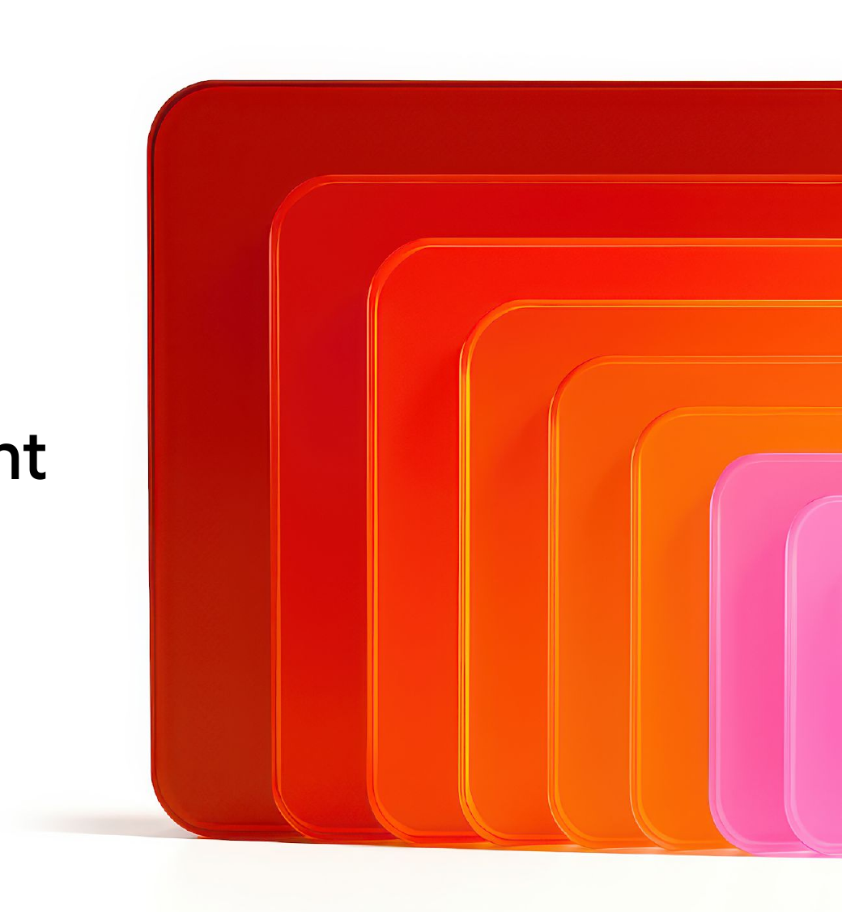
Workshop Hub & Essential Links
Scan or open the Codelab now so you can follow along step-by-step
1. Workshop Codelab (Start Here)
codelabs.developers.google.com/gemini-mcp-agyFull step-by-step instructions, prompts, and Cloud Shell setup for today's lab.
2. Google Antigravity Docs
antigravity.google/docsOfficial documentation for AGY CLI, IDE, MCP servers, Skills, Plugins, and Hooks.
3. Slides, Runbook & GDE Artifacts
github.com/rabimba/GDE-ML-ArtifactsToday's slides, copy-paste prompt sheet, and Antigravity SDK reference code.
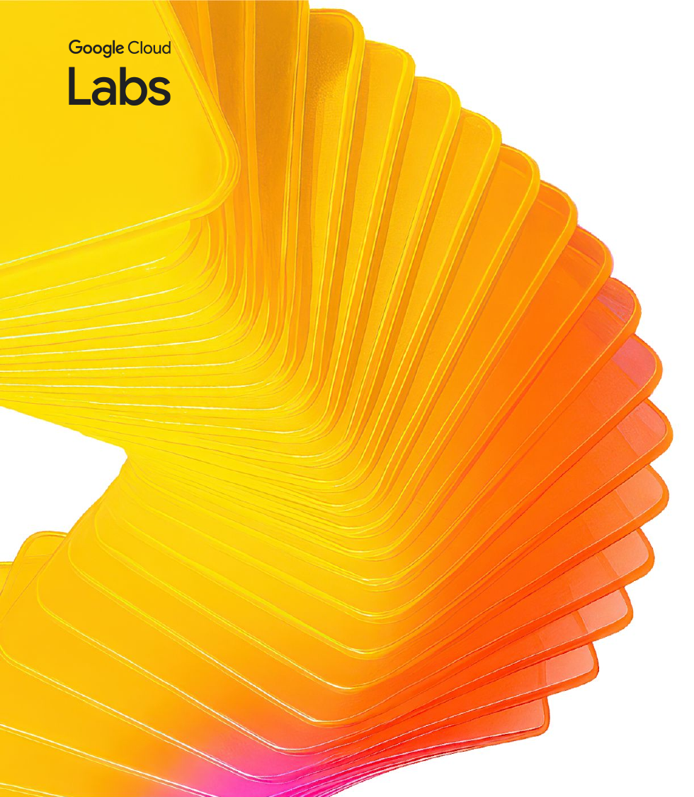

Rabimba
Karanjai
Google Developer Expert — AI & ML
ML Scientist — PayPal
Today's 75-Minute Mission
How we'll go from an empty Cloud Shell to a deployed production agent with zero manual coding
We will build the "Cat Delivery System" through 4 progressive hands-on checkpoints. Every module pairs a core agentic engineering pattern with immediate hands-on execution.
Hello AGY CLI
(00:20 – 00:30)
Launch & authenticate Antigravity CLI inside Cloud Shell Editor. Generate, run, and inspect our first Node.js cat trivia script.
Developer Knowledge MCP
(00:30 – 00:45)
Eliminate documentation cutoffs! Connect Google's official MCP server and generate kitten art with Nano Banana 2.
Skills & /planning Mode
(00:45 – 01:02)
Install the Antigravity SDK Skill & Chrome Web Plugin. Use /planning and /artifact to architect the Cat Delivery System.
Cloud Run & Guardrails
(01:02 – 01:15)
Switch to /fast mode to containerize and deploy to Cloud Run, then try to break our 'Strictly No Dogs (Capybaras OK)' guardrail!
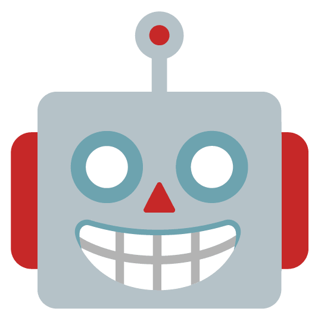
From Code Autocomplete
to Command & Control
- 🙋 Every single week! (The 'Hallucinated SDK' trap) Click to Vote
- 🙋 It used an outdated v0.1 API from 2023! Click to Vote
- 🙋 I ended up copy-pasting 10 pages of docs into the chat prompt! Click to Vote
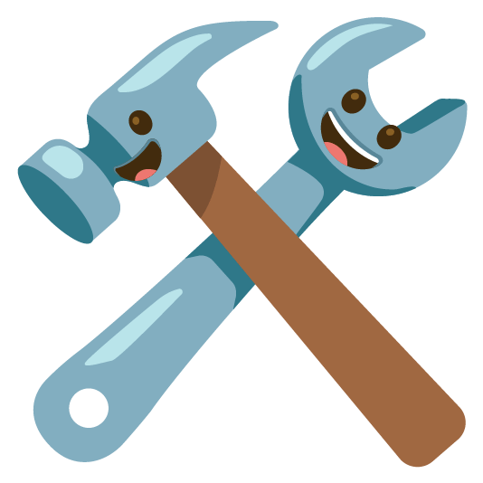
MCP & Skills
(Context & Tools)

Antigravity
(Agent Harness)
Gemini Models
(Reasoning & Media)
Objectives & Workshop Outcomes
By the end of this hands-on workshop, you will orchestrate Antigravity to build and deploy the "Cat Delivery System" while mastering four modern agentic development skills:
- • Dual-Mode Orchestration (/fast vs /planning): Learn when to use /fast mode for immediate scripts and deployments versus /planning mode with interactive /artifact reviews for full-stack architectures.
- • Authoritative Grounding via Developer Knowledge MCP: Connect Antigravity CLI directly to Google's official documentation server (developerknowledge.googleapis.com/mcp) so it writes up-to-date Vertex AI code on the first try.
- • Progressive Disclosure with Agent Skills & Plugins: Install specialized skills (google-antigravity-sdk) and plugins (GoogleChrome/modern-web-guidance) that load into context only when needed.
- • End-to-End Cloud Run Deployment & Auditing: Package a Lit + Vite frontend and FastAPI + Antigravity SDK backend into a single container, deploy to Cloud Run, and verify acceptance criteria automatically.
Core Architecture
Flow of the "Cat Delivery System" — An Agent Building an Agent
Today's workshop features a two-tier agentic architecture: we use Antigravity CLI (Tier 1) to build and deploy a Cloud Run application powered by the Antigravity SDK (Tier 2).
- Orchestration Layer (AGY CLI): Runs in Cloud Shell Editor, combining Developer Knowledge MCP + installed Skills to plan, write, and deploy the app.
- Web Frontend (Lit + Vite): Clean, light-mode reactive chat interface bundled and served statically by our Python backend.
- Agent Runtime (FastAPI + AGY SDK): Uses Gemini 3.5 Flash as the root agent with strict persona instructions: ABSOLUTELY NO DOGS (Capybaras allowed!).
- Image Generation (Nano Banana 2): Invokes Gemini 3.1 Flash Image on Vertex AI to generate anime, 3D, or photorealistic cats on demand.
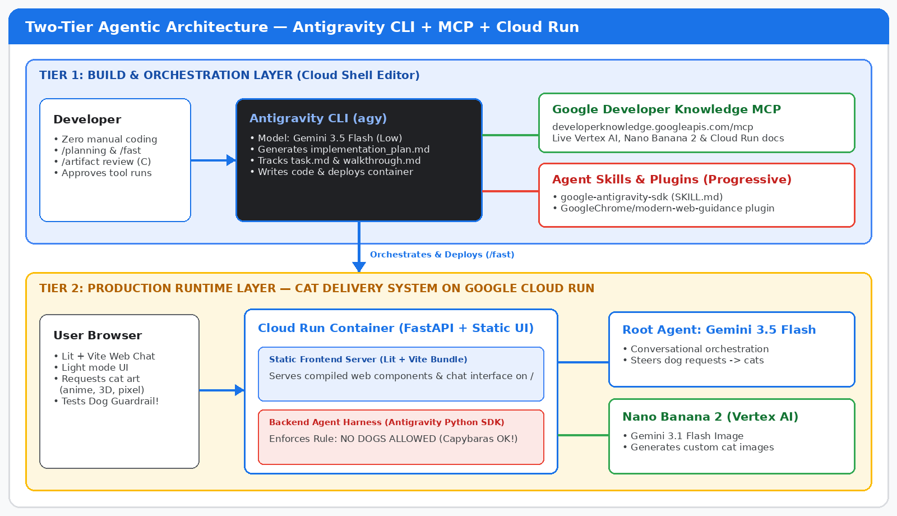
🔍 Click diagram to enlarge full-screenKey Technologies & Concepts We'll Use!
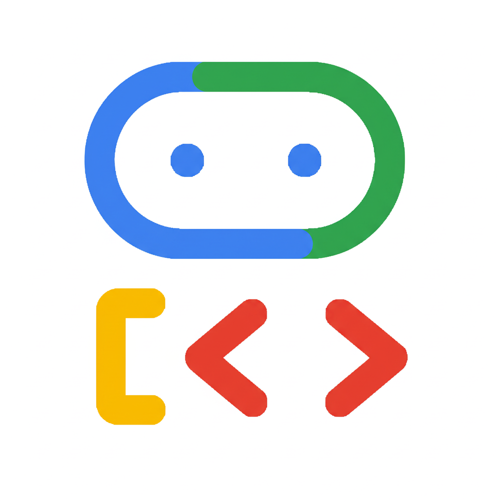
Google Antigravity
(CLI & Python SDK)
Google's AI-first agentic development platform. We'll use the terminal CLI (`agy`) to orchestrate code, and the Python SDK (`google-antigravity`) as the runtime harness for our app.
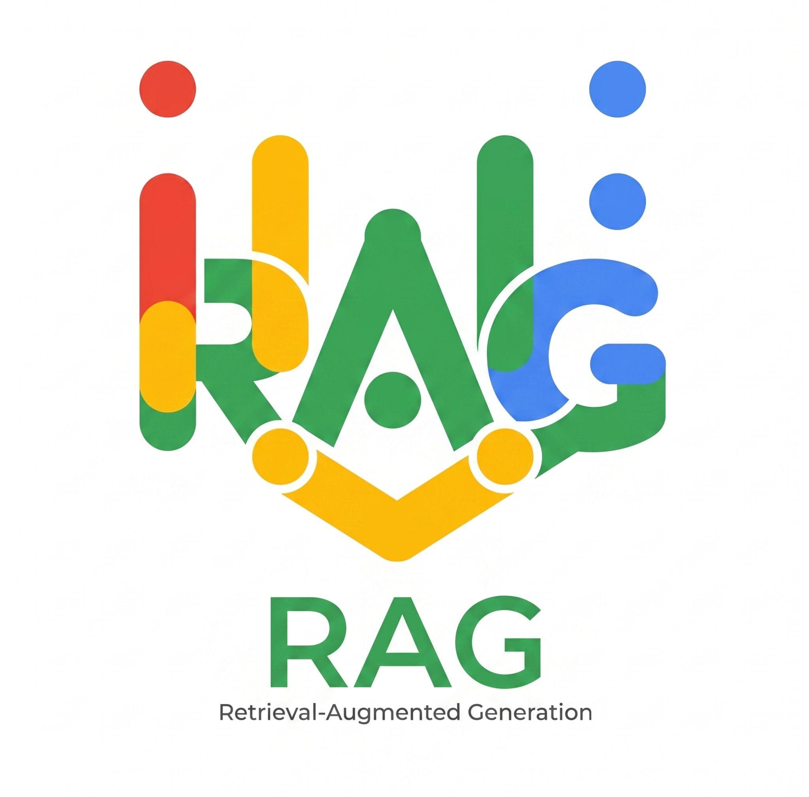
Developer Knowledge
MCP & Agent Skills
Open standards for extending agents. MCP connects `agy` to live Google documentation APIs, while Agent Skills (`SKILL.md`) provide progressive, on-demand procedural expertise.
Gemini 3.5 Flash, Nano
Banana 2 & Cloud Run
Gemini 3.5 Flash powers fast agent reasoning, Gemini 3.1 Flash Image (Nano Banana 2) generates images, and Cloud Run hosts our container serverlessly.
Model Context Protocol (MCP)
Live External Tools & Authoritative Data
- What It Is: An open protocol connecting AI agents to external APIs, databases, and documentation servers via standardized tool calls.
- Google Developer Knowledge MCP: Hosted at developerknowledge.googleapis.com/mcp. Lets coding agents search & fetch live docs for Cloud, Vertex AI, Firebase, Android, and Maps.
- Best For: Dynamic lookups, querying live systems, and ensuring SDK/API usage is 100% current.
Agent Skills & Plugins
Progressive Disclosure of Workflows (agentskills.io)
- What They Are: Lightweight folders containing a SKILL.md instruction file (plus optional scripts/templates) that teach an agent how to perform specialized tasks.
- Progressive Disclosure: At startup, ONLY the skill's name & short description are in the prompt. The full SKILL.md is loaded ONLY when the agent activates it—saving massive tokens!
- Plugins: Bundle Skills + MCP servers + Rules + Hooks into a single installable package.
Let's build this!
 Lab Step 1 — Setting Up Cloud Shell Editor & Authenticating Antigravity CLI (agy)
Lab Step 1 — Setting Up Cloud Shell Editor & Authenticating Antigravity CLI (agy)
Step 1: Open Cloud Shell Editor Terminal
Critical Workaround for Clean TUI Rendering
While Cloud Shell comes with Antigravity pre-installed, the default Cloud Shell bottom pane doesn't render advanced TUI menus properly. Always use the terminal inside Cloud Shell Editor!
- 1. Activate Cloud Shell: Click the 'Activate Cloud Shell' icon (>_) in the top-right toolbar of the Google Cloud Console.
- 2. Click 'Open Editor': Click the pencil/editor icon on the Cloud Shell toolbar (and maximize the window) to launch the Cloud Shell Editor.
- 3. Open Integrated Terminal: Use menu Terminal > New Terminal or press Ctrl + ` (Control + backtick) to open the bash prompt inside the editor.
# Create a working directory for our warm-up exercise
mkdir -p ~/hello-agy && cd ~/hello-agy
# Launch Antigravity CLI
agy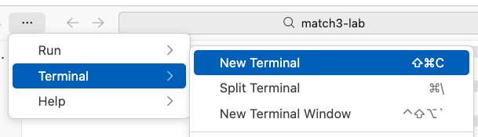
🔍 Click screenshot to zoomStep 2: Authenticate Antigravity CLI
Select Auth Mode
Choose 'Use a Google Cloud project'
Complete OAuth Flow
Open link in incognito tab & paste auth code
Set Project & Location
Enter your PROJECT_ID & choose 'global'
Use Incognito & Select 'global' Location
Copy the OAuth URL shown in agy and open it in a new tab of your SAME incognito window so you log in with your workshop student credentials. When prompted for location, select 'global'.
? How would you like to authenticate?
> 1. Use a Google Cloud project
Paste authorization code: [PASTE_CODE_HERE]
Enter Google Cloud Project ID: [YOUR_PROJECT_ID]
Select Google Cloud Location: > global✋ Checkpoint 1: Generate & Run Cat Trivia
1. Prompt & Approve Tool Execution
Human-in-the-Loop Permission Model
Write a simple node script that returns cat trivia and run it for me- Autonomous Coding: AGY writes cat-trivia.js fetching random facts from catfact.ninja/fact with ASCII art.
- Permission Gate: Before running shell commands (`node cat-trivia.js`), AGY pauses and asks for permission. Select `1. Yes`.
2. Inspect Output & Ask for Explanation
Conversational Code Understanding
Explain the code you generated please
# When finished, exit AGY CLI:
# Press Ctrl+D twice- ASCII Cat & Trivia Output: AGY executes the script, captures stdout, and displays your cat fact right in the TUI.
- Clean Exit: After reading the code explanation, press `Ctrl+D` twice to exit `agy` back to bash.
Inside ~/.gemini: AGY Configuration Layout
Where Antigravity Stores Brains, MCP Servers, Skills & Rules
Before we connect the Google Developer Knowledge MCP server, let's look at how Antigravity organizes its global configuration inside your home directory (`~/.gemini`).
- antigravity-cli/brain/: Persists conversation transcripts and generated artifacts (implementation_plan.md, task.md, walkthrough.md).
- config/mcp_config.json: Global registry of Model Context Protocol (MCP) servers available across all your workspaces.
- skills/ & config/plugins/: Houses installed Agent Skills (`SKILL.md`) and multi-capability Plugins.
- Enable the API: Run `gcloud services enable developerknowledge.googleapis.com` to activate the MCP endpoint on your project.
~/.gemini
├── antigravity/
├── antigravity-cli/
│ ├── brain/ # Conversations and artifacts
│ └── settings.json # CLI settings
├── config/
│ ├── plugins/ # Global / shared plugins
│ └── mcp_config.json # Global / shared MCP config
├── skills/ # Global / shared skills
│ └── {skill_name}/
│ └── SKILL.md # Skill definition
└── GEMINI.md # Global rulesStep 3: Configure Developer Knowledge MCP
Connecting AGY to Official Google Documentation
By adding `google-developer-knowledge` to `~/.gemini/config/mcp_config.json`, Antigravity gains direct search & retrieval tools over official Google Cloud, Vertex AI, Firebase, and Android docs.
- 1. Enable Developer Knowledge API: Run: `gcloud services enable developerknowledge.googleapis.com`
- 2. Edit ~/.gemini/config/mcp_config.json: Run: `mkdir -p ~/.gemini/config && cloudshell edit ~/.gemini/config/mcp_config.json`
- 3. Replace [[PROJECT_ID]]: IMPORTANT: Replace `[[PROJECT_ID]]` in `X-goog-user-project` with your actual Google Cloud Project ID!
- 4. Verify in AGY with /mcp: Launch `agy` and run `/mcp` to confirm `google-developer-knowledge` is active.
{
"mcpServers": {
"google-developer-knowledge": {
"url": "https://developerknowledge.googleapis.com/mcp",
"authProviderType": "google_credentials",
"oauth": {
"scopes": ["https://www.googleapis.com/auth/cloud-platform"]
},
"timeout": 30000,
"headers": {
"X-goog-user-project": "[[PROJECT_ID]]"
}
}
}
}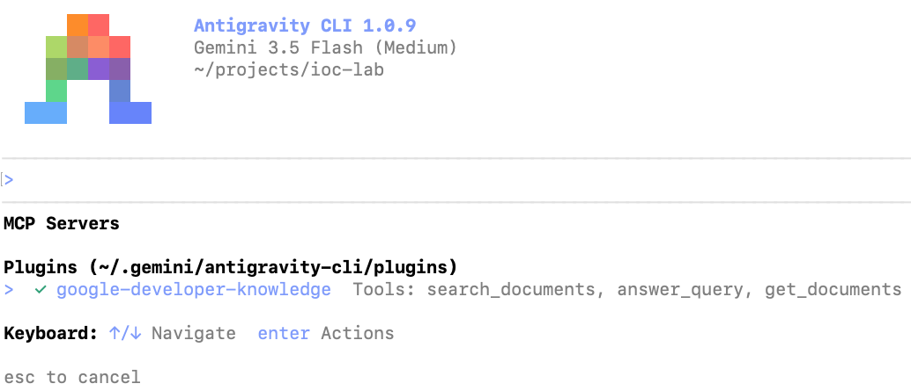
🔍 Click screenshot to zoom🎤 The "Nano Banana 2" Challenge
Why Ungrounded Agents Fail vs. How MCP Succeeds
Let's test our new MCP server with a prompt that mentions "Nano Banana 2"—the nickname for Google's Gemini 3.1 Flash Image generation model.
- 🎤 Pop Quiz for the Room: What happens if you ask a standard LLM (without MCP) to 'Write a Vertex AI script using Nano Banana 2'?
- Without MCP: Hallucination!: The model either thinks 'Nano Banana 2' is a fictional fruit API or guesses an obsolete `vertexai.preview.vision_models` call.
- With Developer Knowledge MCP: AGY searches official Google docs for 'Nano Banana 2', discovers it maps to `gemini-3.1-flash-image-preview` via the `google-genai` SDK, and writes working code!
# 1. Exit agy (Ctrl+D twice) & enable Vertex AI API
gcloud services enable aiplatform.googleapis.com
# 2. Create project & initialize uv
mkdir -p ~/nano-banana-kitten && cd ~/nano-banana-kitten
uv init
agy
# 3. Paste this prompt into agy:
Write a script that uses Nano Banana 2 through Vertex AI to generate a picture of a cute kitten, and run the script for me. Use the google-developer-knowledge MCP when researching.✋ Checkpoint 2: Inspect Thinking (Ctrl+O) & Kitten Output
- Press Ctrl+O in AGY: Expands intermediate thinking steps! Watch AGY call `google-developer-knowledge` search & fetch tools to look up `gemini-3.1-flash-image`.
- Autonomous Dependency Management: AGY automatically adds `google-genai` / `pillow` via `uv add`, writes the Python script, and executes it.
- Self-Healing on Errors: If an environment variable or project flag is needed, AGY reads the traceback, fixes the script, and re-runs until the image is saved!
- View Your Kitten! =^_^=: Click the generated `.png` file in the Cloud Shell Editor file tree on the left to see your AI-generated kitten.
Cloud Shell Editor showing the generated kitten image alongside AGY's terminal execution. (Click to zoom)
Installing Skills via Skills CLI
Open Marketplace & GitHub Repos (npx skills)
- Why We Need Skills Here: Official docs great for APIs, but building an agent with the Antigravity SDK requires opinionated multi-file patterns and harness conventions.
- GitHub Skill Installation: Using Vercel's `npx skills add` CLI, we can install any skill directly from a GitHub repo containing a `skills/` folder.
- google-antigravity-sdk Skill: Teaches `agy` how to properly instantiate, configure, and stream from the Antigravity Python SDK.
Installing Antigravity Plugins
Cohesive Bundles via `agy plugin install`
- What's Inside a Plugin?: A single package that can bundle Skills (`SKILL.md`), MCP servers (`mcp_config.json`), Rules (`GEMINI.md`), and Hooks (`hooks.json`).
- Chrome's modern-web-guidance: Written by the Google Chrome team—teaches `agy` modern web best practices for Lit, Vite, responsive layouts, and clean UI architecture.
- Inspecting Loaded Skills: Run `/skills` inside `agy` at any time to inspect all discovered workspace, plugin, and global skills.
Step 4: Install Skills & Plugins for Cat Delivery
Equipping AGY with Backend SDK & Modern Web Expertise
Exit `agy` (`Ctrl+D` twice) and run these commands in your terminal to initialize the `~/cat-delivery` project and install both skills.
- 1. Initialize Project with uv: Create `~/cat-delivery`, run `uv init`, and add `fastapi` and `uvicorn`.
- 2. Add Antigravity SDK Skill: Runs `npx skills add Google-Antigravity/antigravity-sdk-python` targeting `--agent antigravity-cli`.
- 3. Install Chrome Web Plugin: Runs `agy plugin install https://github.com/GoogleChrome/modern-web-guidance`.
- 4. Verify with /skills: Launch `agy` and type `/skills` to confirm both skills appear in the menu!
# 1. Create workspace and install base backend dependencies
mkdir -p ~/cat-delivery && cd ~/cat-delivery
uv init && uv add fastapi uvicorn
# 2. Install the official Antigravity Python SDK skill
npx skills add Google-Antigravity/antigravity-sdk-python \
--skill google-antigravity-sdk --agent antigravity-cli --yes
# 3. Install the Chrome team's modern-web-guidance plugin
agy plugin install https://github.com/GoogleChrome/modern-web-guidance
# 4. Launch agy and check installed skills
agy
/skills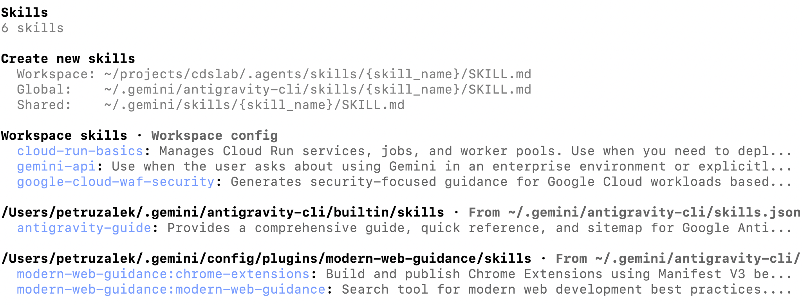
🔍 Click screenshot to zoom🎯 Operating Modes (/fast vs /planning) & /model
Matching Agent Autonomy & Thinking Level to Task Complexity
Before we prompt `agy` to build the full application, we need to configure two key levers: the **Operating Mode** and the **Model Thinking Level**.
- /fast Mode (Immediate Execution): Starts writing files and running commands immediately. Best for simple, self-contained tasks (like our cat-trivia script or deploying an already-built app).
- /planning Mode (Design First): Researches the problem first and produces an `implementation_plan.md` artifact for you to review, comment on, and approve before writing code.
- /model & Thinking Levels: Run `/model` and select **Gemini 3.5 Flash (Low)**. 'Low' thinking gives super-fast responses and great token economics; 'High' spends more tokens reasoning deeply.
# 1. Open model selector and choose Gemini 3.5 Flash (Low)
/model
# 2. Switch to Planning Mode for our full-stack build
/planning
# (You can switch back to Fast Mode anytime with /fast)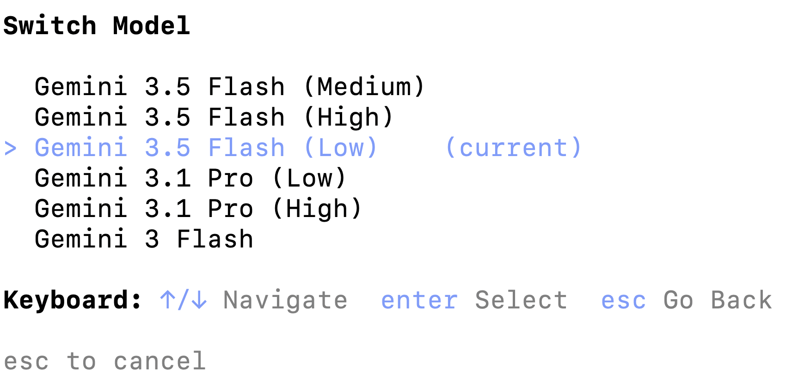
🔍 Click screenshot to zoomStep 5: Generate the Implementation Plan
Prompting the "Cat Delivery System" in /planning Mode
Make sure you are in `/planning` mode, then send this specification prompt to `agy`. Notice how we specify the persona rules, tech stack, and contract-first TODOs!
- Persona & Guardrail Rule: Generates cat pictures in any style (anime, cartoon, photorealistic, 3D). Rule: ABSOLUTELY NO DOGS—steer toward cats! P.S.: Capybaras are allowed.
- Dual-Model Spec: Gemini 3.5 Flash for the root conversational agent + Gemini 3.1 Flash Image (Nano Banana 2) for image generation.
- Contract-First Architecture: Requires `agy` to define the contract between the Lit/Vite frontend and Antigravity SDK backend before coding.
Create an application named "Cat Delivery System". This application will be an agent that generates cat pictures using Gemini 3.1 Flash Image (aka Nano Banana 2). The user will interact with the agent whenever it feels the need for a cat picture in their life, whether it be to make them smile, laugh or just brighten their day. Cat pictures can take any form the user desires: anime, cartoon, photorealistic, 3D render, etc. The only rule is ABSOLUTELY NO DOGS - steer the user towards cats if necessary. P.S.: capybaras are allowed.
The tech stack should be as follows:
- uv package manager
- Backend: agent using Antigravity SDK
- Frontend: simple chat window, light mode, lit / vite
- Model: Gemini 3.5 Flash for the root agent, Gemini 3.1 Flash Image for image generation
TODO:
- backend should serve a static frontend
- define the contract between frontend and backend before starting implementation
- use Google Cloud Project authUnder the Hood: Autonomous Research Phase
- Skills Activated on Demand: Watch the TUI: `agy` automatically activates `google-antigravity-sdk` and `modern-web-guidance` skills to learn the exact SDK & Lit/Vite patterns.
- Live MCP Queries: Simultaneously queries `google-developer-knowledge` MCP to verify Gemini 3.1 Flash Image parameters and Vertex AI auth.
- Zero Premature Coding: Because we're in `/planning` mode, `agy` does NOT start randomly creating files—it synthesizes everything into a formal `implementation_plan.md` artifact.
- Look for '1 artifact' Badge: When research completes, look at the bottom-right corner of the terminal for `1 artifact` and the `/artifact` hint!
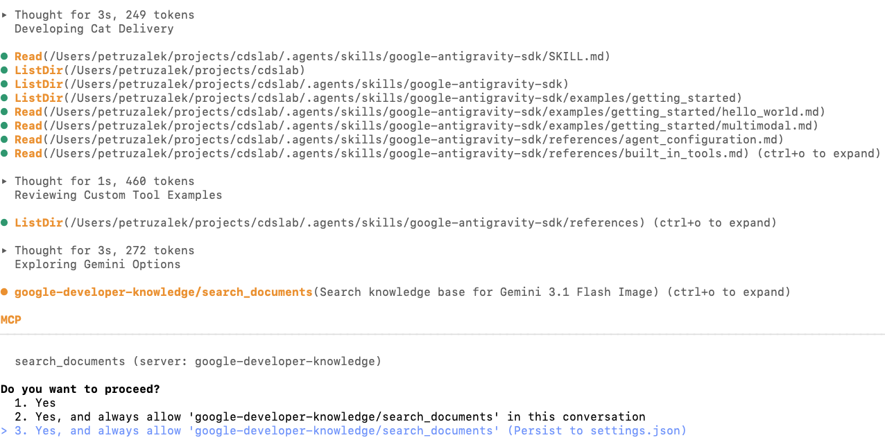
AGY invoking both the Developer Knowledge MCP server and installed Agent Skills during the planning research phase. (Click to zoom)
Human-in-the-Loop Review with /artifact
How to Inspect, Comment On, and Approve `implementation_plan.md`
In Antigravity, supporting documents (`implementation_plan.md`, `task.md`, `walkthrough.md`) are called **Artifacts**. You can review and annotate them line-by-line right in the CLI!
Run /artifact
Type `/artifact` in the prompt. Select `implementation_plan.md` from the list and press Enter to open the interactive viewer.
Check API Contract & Verification
Scroll with arrow keys (`↑`/`↓`). Verify the Frontend ↔ Backend JSON contract and check the 'Verification Plan' section at the bottom.
Add Inline Comments (Press C)
Want to tweak an endpoint, port, or UI detail? Navigate to any line and press `C` to attach a comment directly to that line!
Approve & Execute (ESC → Y)
When happy with the plan, press `ESC` to exit the viewer and press `Y` to send your approval/comments to the agent and start coding!
✋ Checkpoint 3: Autonomous Implementation & Artifacts
What AGY Builds Automatically
Backend (AGY SDK + FastAPI) & Frontend (Lit + Vite)
# Typical generated structure in ~/cat-delivery:
cat-delivery/
├── backend/
│ ├── agent.py # AGY SDK + Nano Banana 2 tool
│ └── main.py # FastAPI + static file mount
├── frontend/
│ ├── src/ # Lit web components chat UI
│ └── vite.config.js
└── pyproject.toml- Backend Harness: Wires Gemini 3.5 Flash root agent + custom Vertex AI `gemini-3.1-flash-image` tool.
- Frontend Build: Scaffolds Lit components, runs `npm install && npm run build`, and mounts `dist/` in FastAPI.
Tracking Progress via /artifact
3 Living Artifacts in ~/.gemini/antigravity-cli/brain/
# Run /artifact after implementation completes:
1. implementation_plan.md (Approved Blueprint)
2. task.md (Live Checklist [x])
3. walkthrough.md (Validation Summary)- task.md: Created automatically to track every implementation and test step.
- walkthrough.md: Generated once coding & local verification finish, documenting what was built and tested.
Step 6: Deploy to Cloud Run in /fast Mode
Switch to /fast Mode
Deployment doesn't need a new design doc
Single-Container Build
Dockerfile bundles Lit dist/ + FastAPI backend
Audit Against Criteria
AGY deploys to Cloud Run & verifies live URL
Why Include Acceptance Criteria in Your Prompt?
By giving AGY explicit Acceptance Criteria ('Frontend is live and renders with no errors', 'Backend responds with no errors'), the agent won't stop at `gcloud run deploy`—it will curl/test the live Cloud Run URL and fix any container startup issues automatically!
/fast
Deploy the agent and frontend to Cloud Run.
TODO:
- backend should serve a static frontend
- frontend and backend are deployed in the same container
Acceptance Criteria
- Agent is deployed to cloud run
- Frontend is live and renders with no errors
- Backend is live and responds to requests with no errors✋ Checkpoint 4: Live "Break the Guardrail" Challenge!
01. Happy Path: Custom Cat Delivery
"I just survived a production outage—send me an anime cyberpunk cat hacker to cheer me up!"
Root agent (Gemini 3.5 Flash) responds with an encouraging message, invokes the Nano Banana 2 (Gemini 3.1 Flash Image) tool, and renders a neon cyberpunk cat right in the Lit chat UI!
Verification Goal: Confirms single-container static UI serving, backend Antigravity SDK harness, and Vertex AI image synthesis work end-to-end on Cloud Run.02 & 03. Guardrail & Easter Egg Tests
"I'm strictly a Cat Delivery System—no dogs allowed! How about an adorable golden fluffy Maine Coon kitten instead?" (Generates cat!)
Agent honors the 'P.S.: capybaras are allowed' clause in its system instructions and generates a chill capybara image via Nano Banana 2!
Your Agentic Orchestration Playbook
4 Repeatable Patterns for Production Engineering with Antigravity
We just built, tested, and deployed a full-stack cloud application without writing a single line of code manually. Here is the 4-step playbook you can take back to your team tomorrow:
Ground with MCP
Never let coding agents guess APIs. Connect `google-developer-knowledge` (and your internal MCP servers) for live, authoritative docs.
Equip with Skills
Package SDK conventions & team workflows as `SKILL.md` files (`npx skills` / `agy plugin`) for token-efficient progressive disclosure.
Plan & Comment First
Use `/planning` + `/artifact` (press `C` to comment) to lock in API contracts and verification plans before a single file is modified.
Audit with Criteria
Switch to `/fast` for deployment and always include explicit Acceptance Criteria so the agent verifies and self-heals its own release.
Quick Reference: AGY CLI Commands & Shortcuts
Essential Slash Commands & Hotkeys
Keep this cheat sheet handy during & after the lab
/planning # Switch to Planning Mode (creates plan artifact)
/fast # Switch to Fast Mode (immediate execution)
/artifact # Open & review implementation_plan.md / task.md
/model # Switch model & thinking level (Low/Med/High)
/mcp # Verify connected MCP servers & tools
/skills # List discovered workspace, plugin & global skills
Ctrl + O # Expand/collapse intermediate agent thinking
Ctrl + D x2 # Exit AGY CLI cleanly back to bash- Inside /artifact Viewer: Use `↑`/`↓` to scroll, `C` to add a line comment, `ESC` then `Y` to submit.
Common Workshop Troubleshooting Fixes
Instant Solutions for Cloud Shell & Vertex AI
# Fix 1: TUI menu looks garbled in Cloud Shell
-> Click 'Open Editor' and use Terminal > New Terminal (Ctrl+`)
# Fix 2: google-developer-knowledge MCP fails to connect
-> Check ~/.gemini/config/mcp_config.json: ensure [[PROJECT_ID]]
was replaced with your real Project ID (no brackets!)
-> Ensure API is enabled:
gcloud services enable developerknowledge.googleapis.com- Vertex AI Location: Ensure `global` location is selected for Gemini 3.5 Flash & Gemini 3.1 Flash Image.
Going Further: Authoring Your Own Skill & Rules
Create a Custom Workspace Skill
.agents/skills/my-team-skill/SKILL.md
---
name: cloud-run-security-audit
description: >-
Audits FastAPI and Cloud Run services for least-privilege IAM,
non-root Dockerfiles, and CORS safety. Activate before deploy.
---
# Cloud Run Security Audit Procedure
1. Verify Dockerfile runs as a non-root user.
2. Check that Vertex AI uses ADC (no hardcoded API keys).
3. Run smoke tests against /healthz before rollout.- Zero Config Discovery: Place in `.agents/skills/<name>/SKILL.md` in your repo to share with your whole team via Git!
Enforce Project Rules with GEMINI.md
Hierarchical Context Rules (GEMINI.md / AGENTS.md)
# Project Engineering Guidelines (GEMINI.md)
- **Package Manager**: Always use `uv` (never raw `pip`).
- **Python Style**: Type-annotate all FastAPI endpoints.
- **Frontend**: Use Lit web components with Vite.
- **Testing**: Run `uv run pytest` after modifying backend code.- Rules vs. Skills: Use `GEMINI.md` for always-on guardrails & coding conventions; use `SKILL.md` for on-demand multi-step playbooks.
Command and control:
Orchestrate app development
with Gemini and MCP
Built & Deployed with Google Antigravity, Developer Knowledge MCP, Agent Skills & Cloud Run
Thank you!
Questions, Feedback & Let's Connect!
Rabimba Karanjai • GDE AI/ML • @rabimba